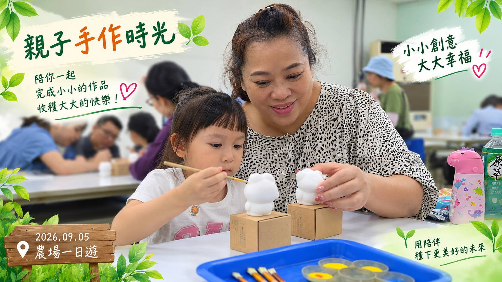
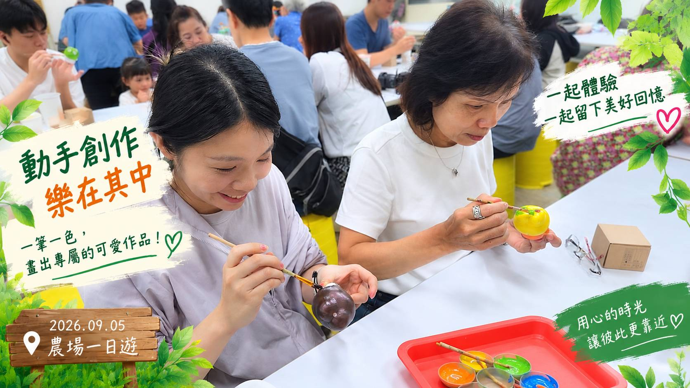
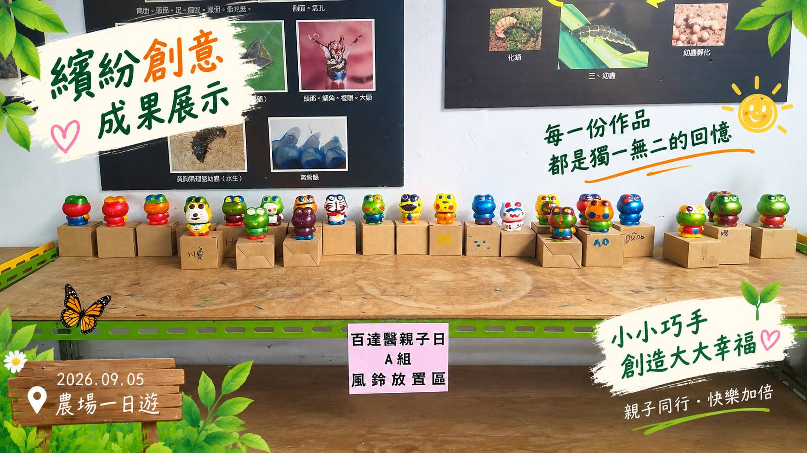
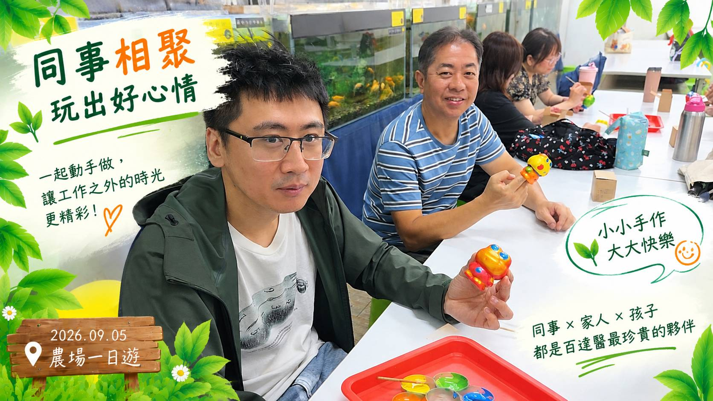
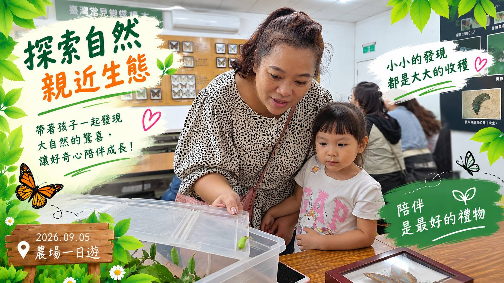
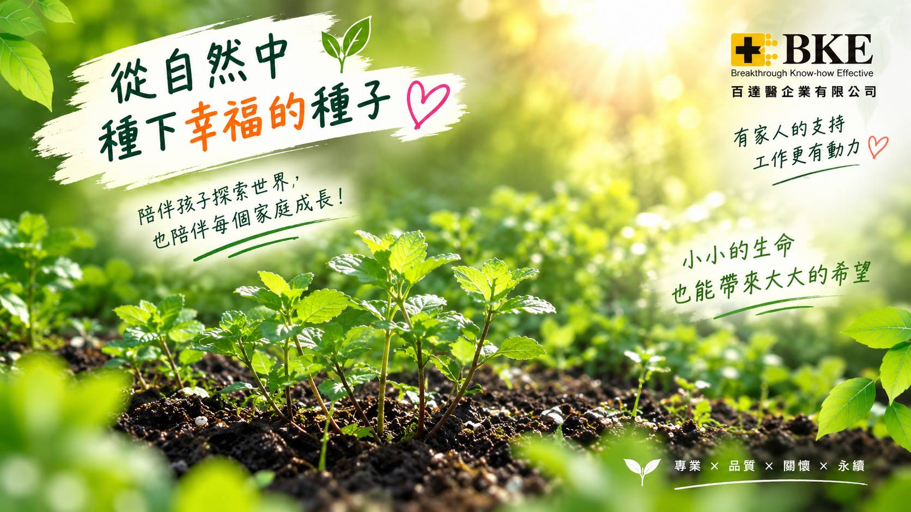
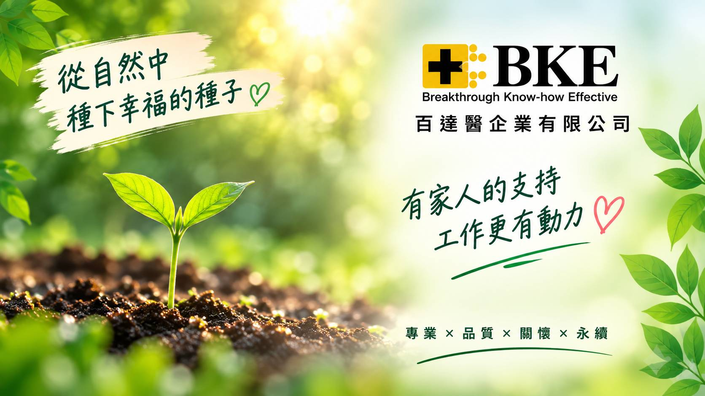

2026年9月5日，百達醫企業有限公司舉辦「農場一日親子遊活動」，邀請同仁暫時放下忙碌的工作節奏，帶著孩子與家人一起走進農場，在自然、笑聲與手作體驗中，度過溫馨又充實的一天。
這次不只是同事之間的出遊，更是一場屬於「家人」的相聚。
從親子互動到母女、家人共同體驗手作，
每一個自然的笑容，都讓這一天多了一份平常工作場合裡看不到的溫度。
🌿 走進農場，把日常工作切換成生活模式

平時的我們，在不同工作崗位上各司其職，為產品、品質、客戶服務及每一項工作任務努力。
這一天，我們換了一個場景。離開辦公室與日常工作的忙碌，走進充滿自然氣息的農場，和身邊最重要的家人一起放慢腳步。
孩子的笑聲、同事之間自在的聊天，以及家人陪伴在身邊的畫面，讓彼此看見工作之外更真實、更生活化的一面。
👩👧 不只是親子日，也是陪伴家人的一天

「親子」不只代表父母與孩子。
這次活動中，有同仁帶著自己的孩子參加，也有人邀請媽媽一起同行。長大之後，我們常常忙著工作、忙著生活，能夠真正陪著父母一起出遊、一起動手做一件事情的時間，反而變得格外珍貴。

一場農場活動，讓孩子陪著爸爸媽媽體驗，也讓長大後的女兒再次陪著媽媽一起完成手作。不同世代的家人在同一個空間裡留下共同回憶，也讓這次百達醫親子日有了更深一層的意義。
👐 一起動手做，完成的不只是作品

活動中特別安排了手作體驗。從準備、製作到完成，每個人都有自己的節奏。大人陪著孩子、孩子專心完成自己的作品，同事與家人之間也互相協助。

手作真正有趣的地方，或許並不只是最後完成了什麼，而是大家一起坐下來、一起研究、一起笑，享受共同完成一件事情的過程。這些看似簡單的小片段，也成為當天最自然、最溫暖的畫面。
❤️ 好的企業文化，也包含員工身後重要的家人

百達醫企業相信，一家公司能夠持續向前，不只是來自制度、專業與團隊合作，也來自每一位夥伴長期投入的心力。而支持每一位同仁安心工作的背後，也都有重要的家人與生活。
當孩子知道爸爸媽媽工作的地方有一群很棒的夥伴；
當父母有機會看看孩子平常一起工作的同事；
當工作夥伴之間也開始認識彼此的家庭——
「公司」也就不只是工作的地方，而是一群人共同努力、共同成長的團隊。
🌱 一起工作，也一起創造值得記住的日子

9月5日的農場一日親子遊，在一張張笑臉與合照中留下了美好的紀錄。謝謝每一位同仁與家人的參與，也謝謝孩子們為這一天帶來滿滿的活力與笑聲，更謝謝媽媽們一起加入我們的行程。
未來，百達醫企業有限公司除了持續在專業與服務上努力，也希望打造一個更有溫度、更有凝聚力的工作環境。
認真工作的我們，也值得好好生活。
一起努力的夥伴，也能帶著最重要的家人，一起創造回憶。
這就是屬於百達醫大家庭的美好一天。
百達醫企業有限公司 (BKE)